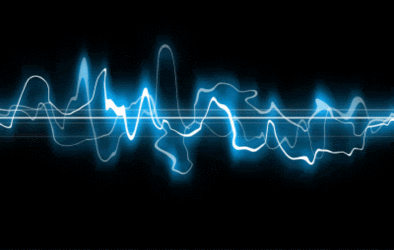
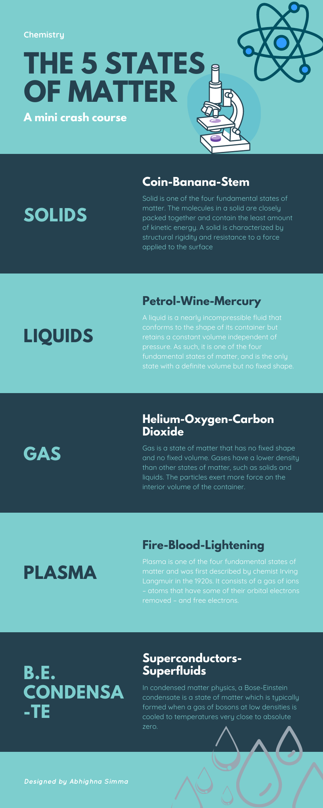

Science
Sustainable Management of Natural Resources
Natural Resources includes total natural environment that support human life and contribute to the production of necessities and comforts to mankind. So natural resources are the coihponents of atmosphere, hydrosphere and lithosphere. Due to the ever-increasing population and rising demands of changing lifestyles, natural resources are being depleted at an alarming rate. To ensure sustainable, equal distribution of resources and reduction of damage to the environment, management of resources must be an integral part of our society. We must ensure judicious use of our natural resources as it is not unlimited and management of such requires long-term planning in order to last generations.
Work, Energy & Power
Work done on an object is defined as the product of the magnitude of the force acting on the body and the displacement in the direction of the force. If a force acting on a body causes no displacement, the work done is 0. For example, pushing a wall. Energy is defined as the ability to do work. Its unit is the same as that of work. SI unit of energy or work is Joule. The rate of doing work or the rate of transfer of energy is called power. It is denoted by P. Law of conservation of energy states that energy can neither be created nor destroyed, but can be transferred from one form to another. The total energy before and after the transformation remains constant.
Sources Of Energy
Energy is the ability to do work or the total power derived from our natural resources. The energy exists in many forms and can be converted from one form of energy into another. Energy in usable form is dissipated to the surroundings as less usable form. Energy is mainly derived from natural sources like the sun, oceans, fossil fuels, wind etc and is converted into electrical energy that we consume for our daily needs and benefits. The energy of the sun is the original source of most of the energy found on earth. We get solar heat energy from the sun, and sunlight can also be used to produce electricity from solar (photovoltaic) cells. The sun heats the earth's surface and the Earth heats the air above it, causing wind, Wind energy.
Force
A force is an effort that changes the state of an object at rest or at motion. It can change an object’s direction and velocity. Force can also change the shape of an object. When balanced forces are applied to an object, there will be no net effective force acting on the object. Balanced forces do not cause a change in motion. Unbalanced forces acting on an object change its speed and/or direction of motion. It moves in the direction of the force with the highest magnitude. When multiple forces act on a body, they can be resolved into one component known as the net force acting on the object
Motion
Some physical quantities can be described just by their numerical value (with their respective units) without directions (they don’t have any direction). The addition of these physical quantities follows the simple rules of the algebra. Here, only their magnitudes are added. Example: Speed, Distance, Mass, Time, Area, Volume, Density, Temperature, etc.
A vector quantity is defined as the physical quantity that has both directions as well as magnitude. Example: Linear momentum, Acceleration, Velocity, Displacement, Momentum, Force, etc.
Matter Around Us
Matter is everything around you. Atoms and compounds are all made of very small parts of matter. Those atoms go on to build the things you see and touch every day. Matter is defined as anything that has mass and takes up space.
